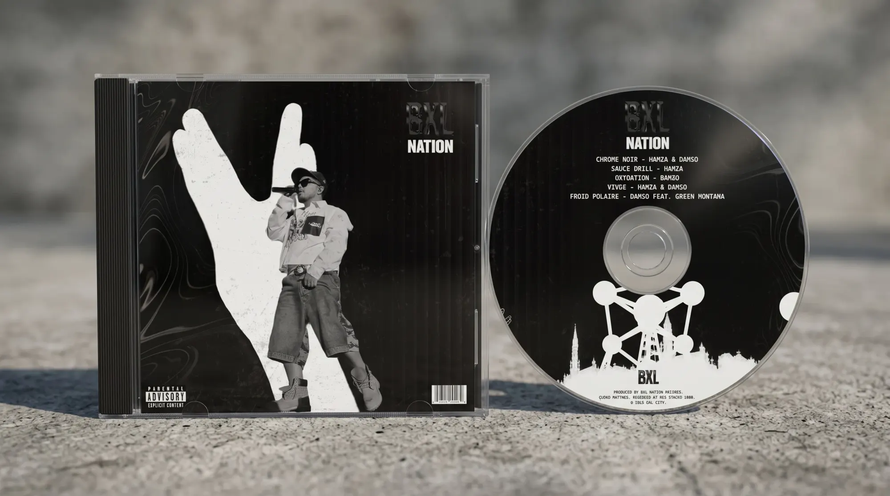
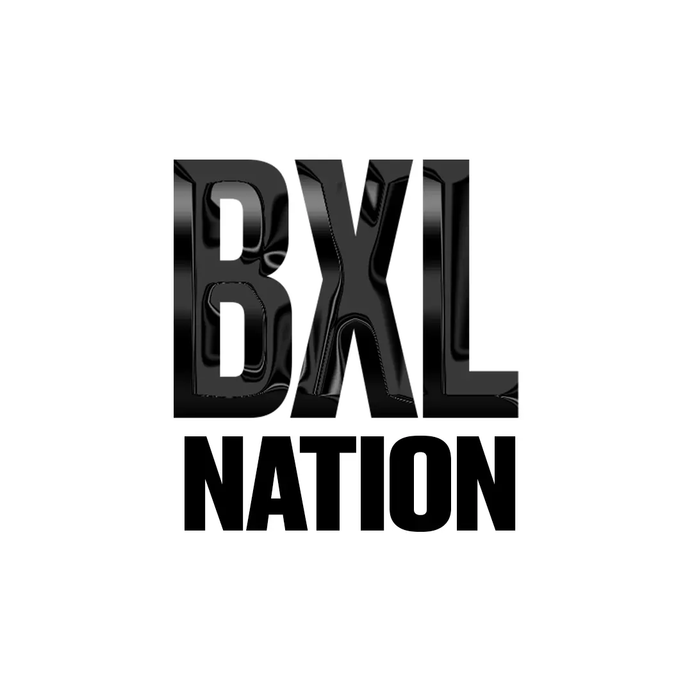
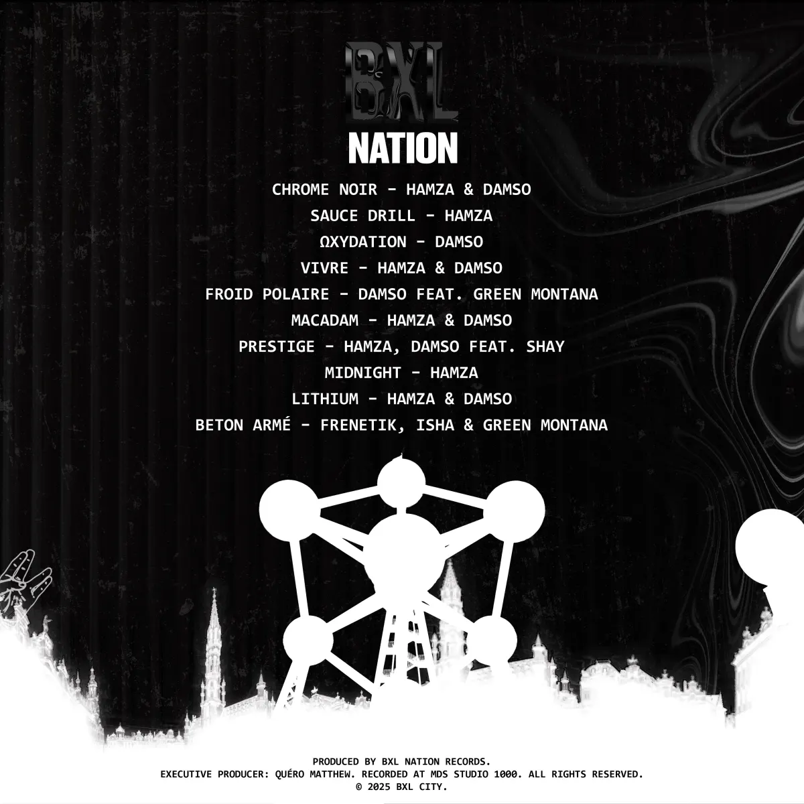
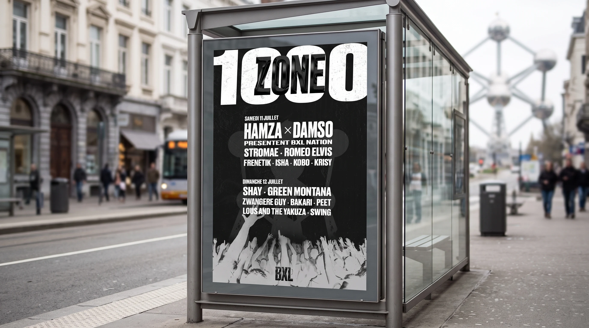
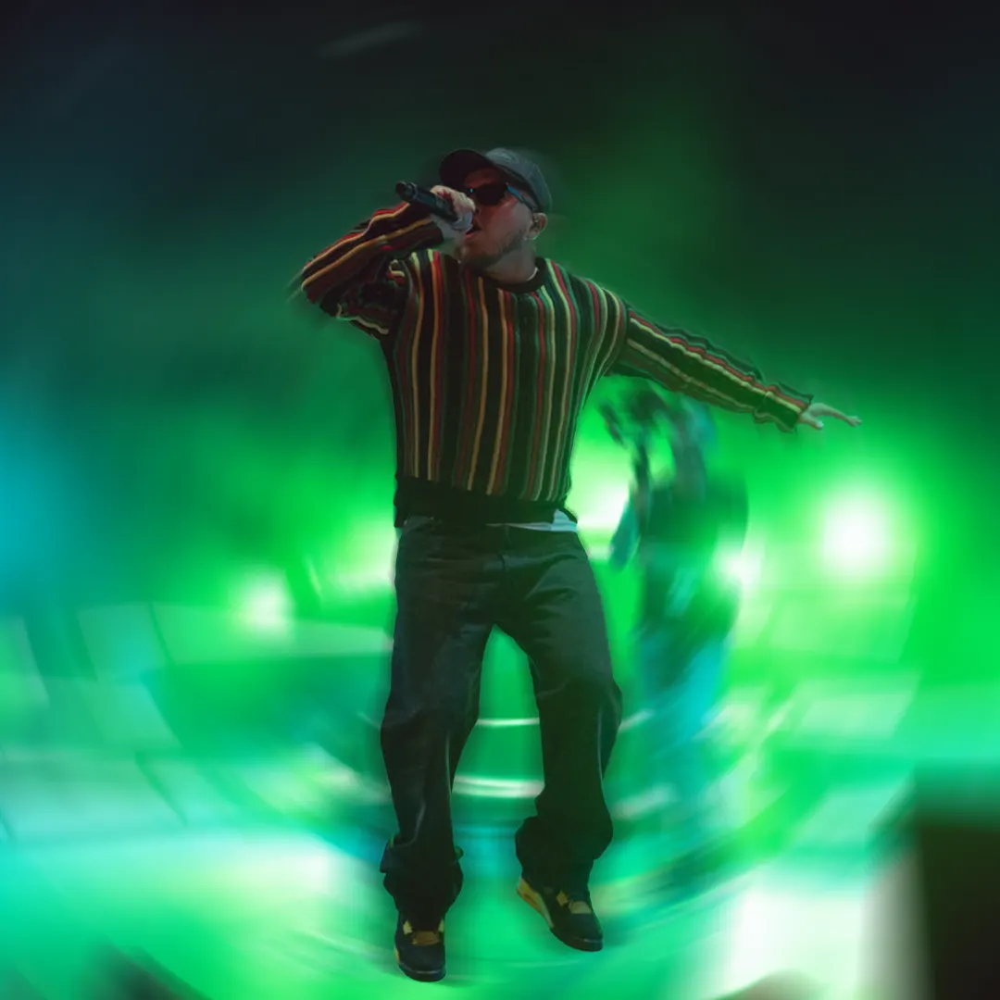

BXL Nation
Identité de marque, 2025
Exercice d'appel d'offre à MyDigitalSchool : prendre deux artistes d'une même ville et faire tenir leurs deux univers dans une seule marque. J'ai choisi Bruxelles, Hamza et Damso. BXL Nation est le label qui en sort, décliné en logo, pochette de vinyle, campagne d'affichage et visuels pour les réseaux.
Noir, blanc, et l'Atomium comme seul signe reconnaissable. Tout le reste est de la matière : béton, texture de bitume, découpes brutes.

Les pièces

Le logo
Un lettrage chromé, lourd et bombé, qui emprunte aux pochettes de rap des années 2000. BXL en gros, Nation posé dessous en lettres pleines.

Le verso de la pochette
La liste des titres au centre, l'Atomium découpé en blanc sur la skyline, et une bande de matière en haut qui déborde comme une coulure.

La campagne d'affichage
L'affiche du festival en abribus, à deux pas de l'Atomium. Le programme est traité comme une liste de titres : Hamza et Damso en tête, le reste en plus petit, sans mise en scène.

Les réseaux
Le seul endroit où la couleur entre. Un vert de projecteur sur fond sombre, le même d'un visuel à l'autre, pour que le fil se tienne sans jamais répéter la même image.
La charte
- #000000
- #303030
- #707070
- #FFFFFF
Druk pour les titres, un gras très condensé qui tient la ligne quelle que soit la taille. Consolas pour le reste, lu comme une étiquette plus que comme du texte.